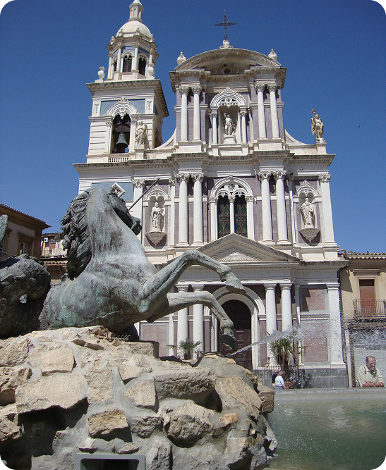

Tra storia, fede e identità
Piazza Garibaldi è la piazza principale e più rappresentativa della città di Caltanissetta. Situata nel centro storico, costituisce da secoli il fulcro della vita sociale, culturale e religiosa della comunità nissena. La piazza è dedicata a Giuseppe Garibaldi, figura centrale del processo di unificazione italiana, e rappresenta uno spazio simbolico in cui si intrecciano storia, tradizioni e vita quotidiana.
Uno degli elementi più caratteristici della piazza è la presenza di importanti edifici storici e religiosi che ne definiscono l’identità architettonica. Tra questi spicca la maestosa Cattedrale di Santa Maria la Nova, principale luogo di culto della città, costruita nel XVI secolo e successivamente arricchita con decorazioni barocche.
Di fronte alla cattedrale si trova lascenografica Fontana del Tritone, realizzata nel XIX secolo, che raffigura la figura mitologica del tritone e contribuisce a rendere la piazza uno spazio monumentale e suggestivo.